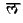
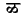
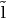
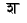
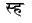

During the 8th World Sanskrit Conference, Vienna 1990, a panel
was held to discuss the standardization of Sanskrit for
electronic data transfer.
Dominik Wujastyk presented a paper, titled ``Standardization of Sanskrit for
Electronic Data Transfer and Screen Representation,'' which outlines the
Classical Sanskrit and Classical Sanskrit Extended Encoding.
The original paper is available in a .zip archive, named ``iass.zip''.
Use archie to locate FTP sites that store iass.zip, if you need the original
paper, as of this writing, it was available at:
ftp.bcc.ac.uk:/pub/users/ucgadkw/indology.
ITRANS now supports CS/CSX, in a limited form.
To turn on recognition of CS/CSX encoded text, use this command before the CS encoded text:
#usecsx
If necessary, you can turn off recognition of CS/CSX encoded text (and revert to ITRANS only encoding), by using this command:
#ignorecsx
Both #usecsx and #ignorecsx apply to the text that follows in the file.
CS/CSX is a case-insensitive encoding, both uppercase and lowercase characters have the same meaning, but ITRANS is case-sensitive. Thus, an uppercase character in ITRANS is encoded to a different devanagari character from its lowercase counterpart.
This means that when you create input text in CSX, do not use uppercase characters. ITRANS differentiates between lower case and uppercase characters. For example, entering la results in , but entering La results in a different character: .
(If you already have input text that is in CS/CSX encoding and it also uses uppercase characters, use some text editor or word processor to convert all the uppercase characters to lowercase. This can be done easily using the text editors such as emacs, or programs such as tr (available on UNIX machines, and also available for MS-DOS systems).)
Table 2 provides the complete input encoding accepted by ITRANS. Note that technically, this uppercase character limitation applies only to the ASCII character codes (those less than 128). CS/CSX character codes over 128 are handled correctly in ITRANS (by correct, I mean handling them with CS/CSX meanings). But, it is simpler to just avoid using any uppercase characters at all. The tables in this document should clarify all this.
Table 1 lists the non-ASCII character codes (128 to 255) accepted by ITRANS.
There are many characters in CS/CSX that are currently not mapped by ITRANS, simply because I do not know what devanagari characters (if any) they stand for.
For example,  is present in the CS table, but I don't know what it represents, so, it is currently unrecognized by ITRANS. If you find such gaps and know what devanagari or tamil or telugu character it stands for, please send me e-mail, so that I can include it in the next release of ITRANS. My e-mail address is available elsewhere in this document. Feel free to send me mail on any other issues regarding CS/CSX support in ITRANS, too.
ITRANS always matches the largest possible input sequence when scanning the input. Thus, in devanagari, sha will produce  even when usecsx is in effect. If instead you need ITRANS to recognize it as two different consonants, you should use the lexical scan break character, the underscore. Thus, typing s_ha will result in .
This is a thing to watch out for in all cases where some character has a multiple letter mapping, and each letter by itself also represents some other character. In the above example, sh is the two letter map, and both s and h represent other characters.
2009-12-04
ITRANS Home Page: http://www.aczoom.com/itrans/